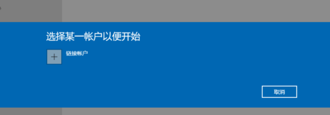
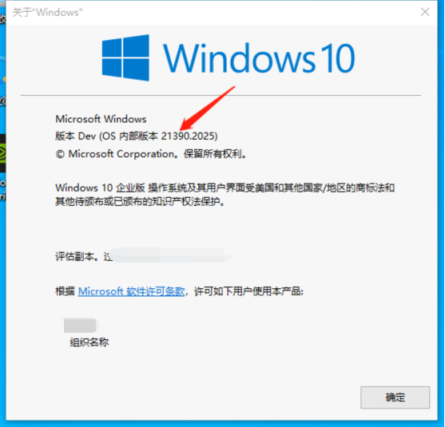
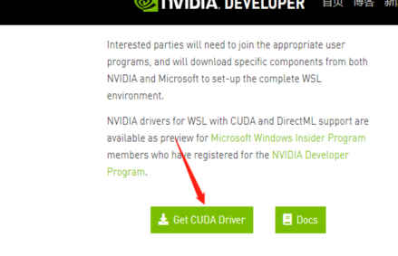
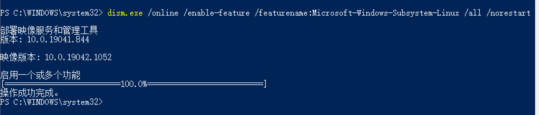
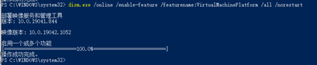
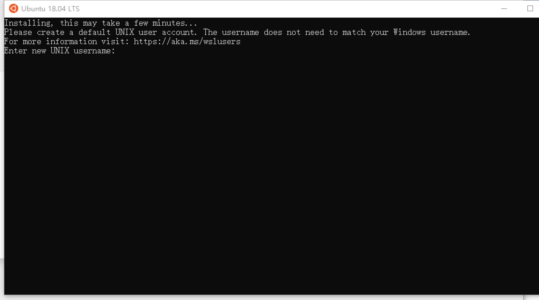
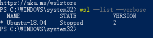
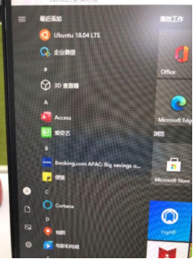

系统更新至预览版
加入Windows Insider Program

注册加入完成后，前往【开始】菜单>【设置】>【更新和安全】>【Windows 预览体验计划】，选择【开始】，然后点击【确认】。



漫长的等待，等待过程中如果出现太久旋转没动静，可反复取消-选择账户，几次下来一般就可以了。随后使用加入Windows Insider Program时注册的账号密码，之后出现

选择dev渠道，然后立即重启。前往【开始】菜单>【设置】>【更新和安全】>【Windows 更新】，下载更新完window，
选择【检查更新】，然后耐心等待最新 Windows 10 预览版的下载和安装。
检查系统更新成功与否
win+R->winver:

确认这里的os内部版本和第四步下载的版本一致
安装驱动
前往链接

下载完成后，正常win程序安装
安装WSL2
按照官方说法，使用预览版会有简单操作，但我是在未使用预览版时安装的，所以仅供参考。
管理员身份运行power shell
如果出现以下问题：

则执行set-ExecutionPolicy RemoteSigned
成功结果为：

如果没有出现上述问题，则执行dism.exe /online /enable-feature /featurename:Microsoft-Windows-Subsystem-Linux /all /norestart开启子系统

然后，执行dism.exe /online /enable-feature /featurename:VirtualMachinePlatform /all /norestart开启虚拟机

随后重启计算机！安装WSL内核更新包链接
将wsl2设置为默认版本：
set --set-default-version 2
安装ubuntu18.04
打开Microsoft store,搜索ubuntu18,点击获取，等待下载安装，安装完成后，点击右上角的启动按钮，会出现下面操作；设置好用户名及密码，子系统安装完成。
安装完成后，运行
wsl --list --verbose
运行
- 点击ubuntu图标
 - 在power shell中运行
wsl

- 点击ubuntu图标
安装cuda toolkit(在ubuntu环境下)
配置cuda网络仓库
依次执行1
2
3
4
5sudo apt-key adv --fetch-keys http://developer.download.nvidia.com/compute/cuda/repos/ubuntu1804/x86_64/7fa2af80.pub
sudo sh -c 'echo "deb http://developer.download.nvidia.com/compute/cuda/repos/ubuntu1804/x86_64 /" > /etc/apt/sources.list.d/cuda.list'
sudo apt-get update安装cuda
执行
sudo apt-get install -y cuda-toolkit-11-0
安装docker和nvidia-docker
安装docker-ce:
curl https://get.docker.com | sh安装nvidia-docker2:
1
2
3
4
5
6
7
8
9
10
11
12
13
14
15distribution=$(. /etc/os-release;echo $ID$VERSION_ID)
curl -s -L https://nvidia.github.io/nvidia-docker/gpgkey | sudo apt-key add -
curl -s -L https://nvidia.github.io/nvidia-docker/$distribution/nvidia-docker.list | sudo tee /etc/apt/sources.list.d/nvidia-docker.list
curl -s -L https://nvidia.github.io/libnvidia-container/experimental/$distribution/libnvidia-container-experimental.list | sudo tee /etc/apt/sources.list.d/libnvidia-container-experimental.list
sudo apt-get update
sudo apt-get install -y nvidia-docker2
sudo gpasswd -a username docker ###username 为设置的Ubuntu用户名
newgrp docker完成安装
1
2
3sudo service docker stop
sudo service docker start验证安装
执行docker run --runtime=nvidia --rm -it --name tensorflow-1.14.0 tensorflow/tensorflow:1.14.0-gpu-py3然后执行
1
2
3python
import tensorflow as tf
print(tf.test.is_gpu_available()) ###输出True